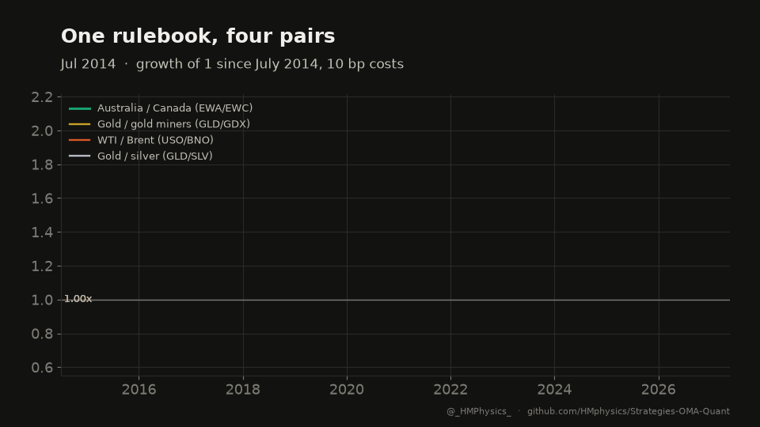
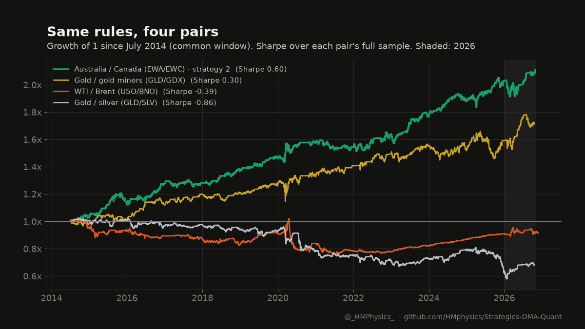
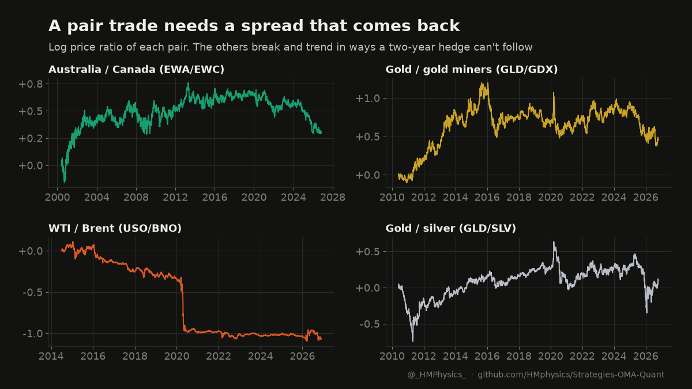
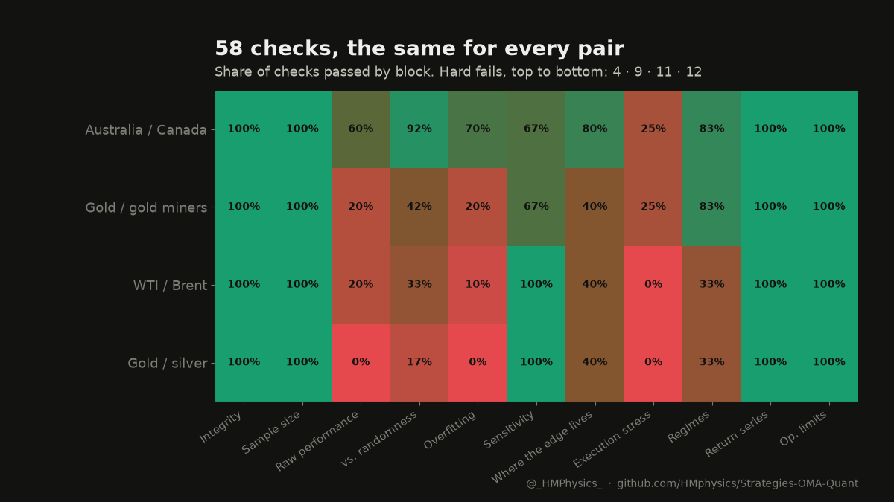
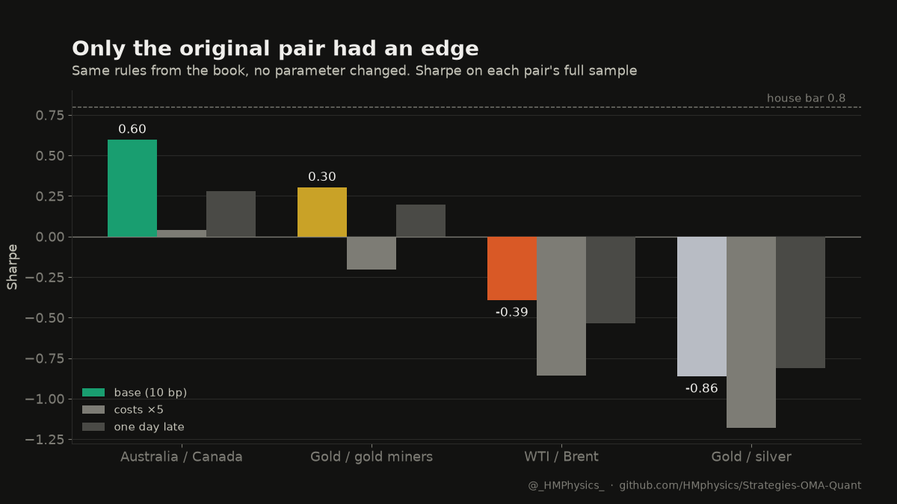

216 Quant Books · Episode 5 · Book 1 · Strategy 5 · variants of strategy 2
Strategy 2 found a real edge in Australia against Canada. Same rules, nothing changed but the pair: gold against silver, gold against the miners, and WTI against Brent.
Rolling two-year hedge, six-month z-score, in at |z| > 1, out at zero, gross exposure 1, 10 bp per side. Gold pairs from June 2010, the oil pair from July 2014 (four years of data for the slowest variant tested).
How it plays
A pairs trade buys the laggard and shorts the leader, betting that the gap between two related assets closes. We kept every rule from strategy 2 and only swapped the pair, so the comparison is clean.


Why

| Pair | Sample | Sharpe | CAGR | Max DD | Years up | 2026 Sharpe |
|---|---|---|---|---|---|---|
| Australia / Canada (strategy 2) | 2000-2025 | 0.60 | 6.6% | −15.7% | 19 of 26 | 0.17 |
| Gold / gold miners | 2010-2025 | 0.30 | 3.5% | −22.4% | 12 of 16 | 0.68 |
| WTI / Brent | 2014-2025 | −0.39 | −0.8% | −25.7% | 4 of 12 | −0.47 |
| Gold / silver | 2010-2025 | −0.86 | −5.4% | −59.5% | 3 of 16 | 0.53 |
Same engine and costs for every line. Sharpe over the T-bill rate. 2026 runs from January to October.
What the engine checked
These pairs were chosen after seeing strategy 2, so YGGDRASIL counts every attempt against them: the 19 configurations tried on Australia/Canada and the other two pairs of this batch.


The verdict
The pairs rulebook is not something you can point at anything that looks related. It worked on Australia and Canada because that spread really does come back; gold, silver, the miners and the two oils trend and break in ways a two-year hedge can't follow.
The lesson is the useful part: before trading a pair, check that the spread mean-reverts, not that the story sounds right. As strategies, we don't like any of the three. YGGDRASIL doesn't accept them, and we agree.